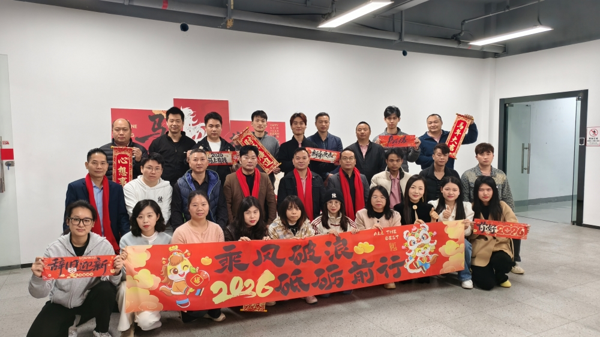

Para celebrar as conquistas do último ano e fortalecer a coesão da equipa, nossa empresa realizou sua Reunião Anual de 2025 em 31 de janeiro. Todos os colaboradores se reuniram para participar de um dia completo de atividades, incluindo fotografia em equipa, apresentações e um banquete de celebração de fim de ano.
Preparação e organização do evento
Uma equipa organizadora dedicada foi responsável pela preparação de materiais, decoração do local e planejamento geral do evento. Membros de vários departamentos trabalharam juntos para garantir que todos os preparativos — desde a instalação dos equipamentos até a coordenação no local — fossem concluídos de forma tranquila e eficiente.
Sessão da manhã: Foto da equipa e gravação do vídeo corporativo

O dia começou com uma sessão de fotos em grupo na entrada principal da empresa, capturando a união e o espírito de toda a equipa. Em seguida, foi realizada a gravação de materiais de vídeo corporativo, destacando a cultura da empresa, o trabalho em equipa e as conquistas do ano.
Programa oficial da reunião anual
A reunião formal ocorreu no salão de conferências de um hotel e começou às 11h00. A agenda incluiu apresentações gerais, resumos departamentais e perspectivas estratégicas para o próximo ano.
Principais destaques da agenda
- Discurso de abertura e resumo anual da liderança
- Representantes dos acionistas apresentando perspectivas de desenvolvimento
- Relatórios departamentais de vendas, operações, produção e P&D
- Destaque de projetos e conquistas de equipas
Almoço e interação da equipa
Após a reunião, os colaboradores desfrutaram de um almoço às 12h30. O ambiente descontraído permitiu que colegas de diferentes departamentos se conectassem, trocassem ideias e fortalecessem a colaboração interna.
Olhando para o futuro
A reunião anual serviu não apenas como uma celebração das conquistas passadas, mas também como um ponto de partida para novas metas. A empresa continuará a defender seus valores de profissionalismo, inovação e dedicação, trabalhando com todos os colaboradores para alcançar ainda mais sucesso no próximo ano.
Conclusão
Em 2025, trabalhamos duro e crescemos juntos. Em 2026, continuaremos avançando com confiança e determinação. Agradecemos a cada membro da equipa por sua contribuição — vamos abraçar o futuro e criar novos marcos juntos.